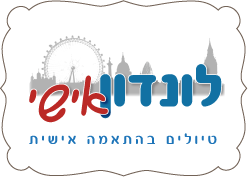
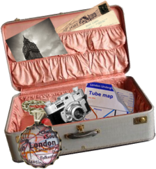
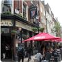

לונדון בעולם.לכאורה,המרשימות והמתוירות זאת עיר קלה להתמצאות (שפה מוכרת, תחבורה נוחה ויש סיכוי
שכבר ביקרנו בה בעבר).
לכאורה, עיר קלהלכאורה, עיר קלה לכאורה, עיר קלה לכאורה, עיר קלה
לונדון היא אחת הערים המרשימות והמתו
- לכאורה, עיר קלהלכאורה, עיר קלהלכאורה, עיר קלהלכאורה,עיר קלהלכאורה, עיר קלהלכאורה,עיר קלהלכאורה, עיר קלהלכאורה, עיר קלהלכאורה, עיר קלהלכאורה, עיר קלהלכאורה, עיר קלה
- לכאורה, עיר קלהלכאורה, עיר קלהלכאורה, עיר קלהלכאורה, עיר קלהלכאורה, עיר קלהלכאורה, עיר קלהלכאורה, עיר קלהלכאורה, עיר קלהלכאורה, עיר קלה
- לכאורה, עיר קלהלכאורה, עיר קלהלכאורה, עיר קלהלכאורה, עיר קלהלכאורה, עיר קלהלכאורה, עיר קלהלכאורה,עיר קלהלכאורה, עיר קלהלכאורה,עיר קלהלכאורה, עיר קלהלכאורה,עיר קלהלכאורה, עיר קלהלכאורה, עיר קלהלכאורה, עיר קלהלכאורה, עיר קלה
-
 לכאורה, עיר קלהלכאורה, עיר קלהלכאורה, עיר קלהלכאורה, עיר קלהלכאורה,עיר קלהלכאורה, עיר קלהלכאורה,עיר קלהלכאורה, עיר קלהלכאורה, עיר קלהלכאורה, עיר קלהלכאורה, עיר קלהלכאורה, עיר קלהלכאורה, עיר קלה
לכאורה, עיר קלהלכאורה, עיר קלהלכאורה, עיר קלהלכאורה, עיר קלהלכאורה,עיר קלהלכאורה, עיר קלהלכאורה,עיר קלהלכאורה, עיר קלהלכאורה, עיר קלהלכאורה, עיר קלהלכאורה, עיר קלהלכאורה, עיר קלהלכאורה, עיר קלה - לכאורה, עיר קלהלכאורה, עיר קלהלכאורה, עיר קלהלכאורה, עיר קלהלכאורה,עיר קלהלכאורה, עיר קלהלכאורה, עיר קלהלכאורה, עיר קלהלכאורה, עיר קלהלכאורה, עיר קלהלכאורה, עיר קלה
-  לכאורה, עיר קלהלכאורה, עיר קלהלכאורה, עיר קלהלכאורה, עיר קלהלכאורה, עיר קלהלכאורה, עיר קלהלכאורה,עיר קלהלכאורה, עיר קלהלכאורה,עיר קלהלכאורה, עיר קלהלכאורה, עיר קלהלכאורה, עיר קלהלכאורה, עיר קלה
- לכאורה, עיר קלהלכאורה, עיר קלהלכאורה, עיר קלהלכאורה, עיר קלהלכאורה, עיר קלהלכאורה, עיר קלהלכאורה, עיר קלהלכאורה, עיר קלהלכאורה, עיר קלהלכאורה, עיר קלהלכאורה, עיר קלה
Site Design By Limcadesign